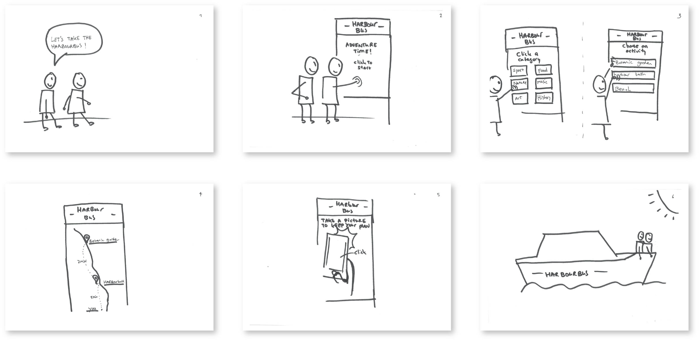
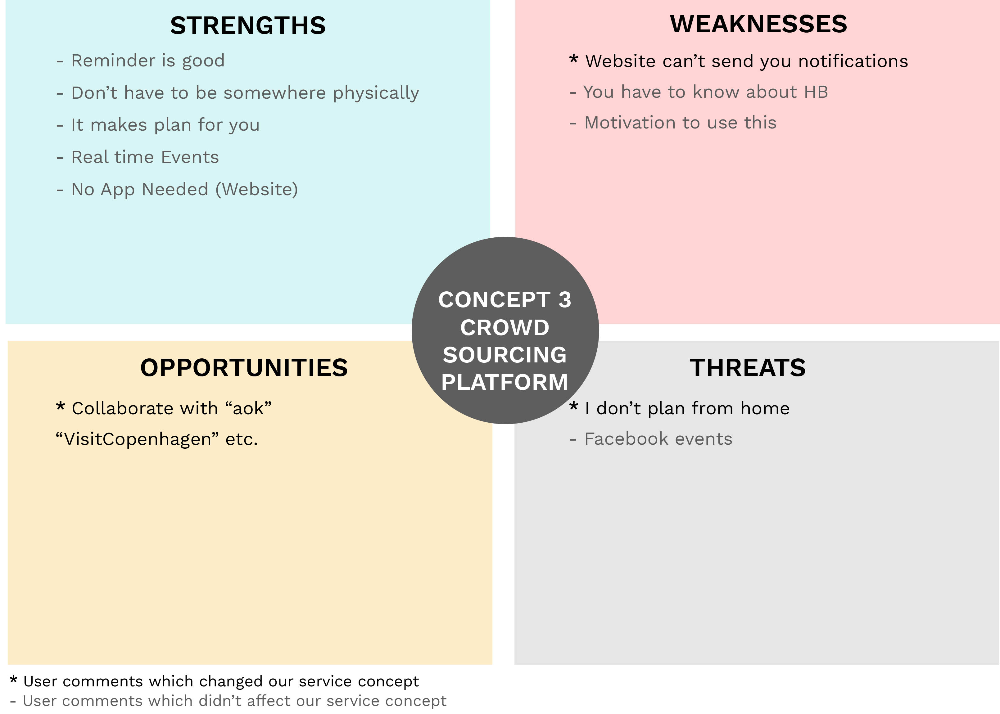

Project Context
Title: Integrate service experience of the Copenhagen harbour area Type of work: Service Design & UX Design Date: 2018.02-2018.05 [4 months]
“CPH Harbour Explorer” is a service platform with interactive boards at bus stops and web apps where event organizers can promote their events. It connects users to events and places around the Copenhagen harbour by using the harbour bus. From the holistic perspective, it helps to disperse the flow of people across all the harbour destinations from the central ones and avoids the congestion. From the users’ perspective, it offers a more integrated experience and gives them easy access information to better plan their trips.
My major tasks and responsibilities covered creating research framework, analyzing & visualizing data, developing service concepts, creating initial UI, and testing the concept with stakeholders. I collaborated with four service designers to deliver the project.
Service Concept
Process
Finding initial direction for the research
At the beginning of the project, we got the topic “Urban Mobility”. As the topic is broad without a clear design brief, we started to share our own experience related to mobility in the group and use mind maps to map out the possibilities around the topic. The activity aims to achieve the consensus within the group and to find the initial research focus.
.jpeg)
To find out the real problems in the mobility system, we split the research process into two lines: from the user's perspective and the systemic perspective.
Interviewing with neighborhood residents
We selected residents who lived in Sydhavn to start our user research because of the district’s close proximity to us, which allowed us to conduct a thorough and quick research to collect the issues related to the social element and mobility. To sparkle the conversation between users and better relate to the topic, we used a map with open questions to guide the user’s focus around mobility. The main finding from the interview showed the difficulty of citizens in Sydhavn to move to other regions in Copenhagen and their positive experience around the harbour. It drove us to investigate the experience around the harbour further.

Discovering users’ experience in real context
To discover new perspectives on the problems around harbour and understand the travel experience for the passengers of using water transportation, we conducted contextual interviews on the harbour bus to gather the most realistic user experience. We used a map of Sydhavn and asked four passengers to pinpoint their location in terms of work/home and to learn about their current harbour bus experience.

Key insights were discovered from this research
- Price: If the new service is going to be more expensive than the current service, they felt demotivated to use it.
- Positive experience: All the users were happy with the current water experience
- Safety: Several users revealed the safety concerns when they talked about transportation on the water
- Schedule: The current service didn’t provide a clear and easy to follow schedule
More users’ insights from the fields
To gather more users’ behavior and their patterns for using the harbour bus, we conducted the structured interview and invited users on the harbour bus. The topics covered users’ individual journeys, the goals of the trip, demographic data, and other comments related to the current service experience.

The struggle of gathering data turned into new ways of investigation
As a part of the semester curriculum, we participated in a workshop regarding scrapping and disseminating data from Twitter and Instagram. During the workshop, we generated a curated list of keywords related to our research scope. However, when we searched the social activities in our research area, it showed no significant engagements on the map. This missing data was a sign of lacking social engagement in our research scope and the urgent need to gather data by investigating other sources.

Based on the result, we decided to expand the research scope from Sydhavn area to the whole Copenhagen harbour area.

Filtered relevant stakeholders in the system
To have a clear research scope and focus, we generated a stakeholders map based on the desk research to limit the numbers of stakeholders and prioritize who is most relevant for our project. The map also presented the different functions they provided in the Copenhagen mobility system.

Understanding stakeholders’ needs in the mobility system
To better understand the Copenhagen harbour area’s mobility, we interviewed various main stakeholders (Team Mobilitet, Visit Copenhagen, Copenhell, Distortion island, Kulturhavn). Their main responsibilities covered transportation, tourism, and event facilitation.
Main findings from stakeholder’s interview
- Harbour bus contributed positively to the city´s profile and it is often featured in the international media.
- Harbour bus was not always shown as a travel choice in the Rejseplanen (a travel plan app) because it was often not the fastest option.
- Harbour bus was seen as a promising solution to reduce the congestion on the streets.
Quantitative data from the stakeholders
To define a more convincing design challenge, we gather quantitative data from Movia (a public transport agency that is responsible for buses in Copenhagen) and analyzed their previous research results.
The data showed a dramatic drop in the harbour bus usage in the last years
And the underuse of some bus stops
Framing the problems & design challenges
Through previous user and stakeholders research, we identified the important role that the harbour bus played for connecting the whole harbour area. Additionally, we identified the common interests between stakeholders to enhance the usage of the harbour area.
Therefore, we reframed our design challenge as,
"How might we mobilize local explorers to experience the harbour through the harbour bus?"Defined target users
From previous user study, we identified three main user groups in the current service system. It helped the design team to have a mutual understanding of who we were designing for, ensuring that the new service tackled the right needs. The target users we were focusing on were A) Spontaneous explorers and B) Tourists explorers

From defining problem area to developing solution
We used a value proposition map to bridge the define and concept creation phase. It helped to connect the specific user needs and wants that we discovered from our user research with the components of the new service.

After framing the right problem, we focused on experimenting with several ways of prototyping to visualize our new service concept. Then we used our prototypes to conduct stakeholder’s testing and user testing.
Sketching out the idea by using videos
The ideation process was combined with a video sketch workshop to sketch out the initial ideas in video format. It gave a more realistic feeling of the new service experience. We used it as a pitch to let viewers quickly understand our problem statement and our service concept.
Problem statement
Video sketch 1
Video sketch 2
Prototyping the physical touchpoint
To envision the interactions between the physical touchpoint (the interactive board) in the service concept, we used arduino to create a prototype.
The prototype included speakers, LED lamps for visualizing new audio messages and buttons to play the audio messages. This prototype was used to test the idea with stakeholders.
Preliminary concept evaluation with stakeholder
We arranged a meeting to gather opinions from one of the stakeholders, a event facilitator from Kulturhavn.

- Key feedbacks from stakeholder
- Positive feedbacks for all the service concepts
- Strong interests in gathering user data to understand their behavior through the service
- Nudge more people to explore new areas close to harbours, such as Sydhavn
Testing ideas with users
We invited nine users to give feedback on the three service concepts to refine our ideas further. We generated three storyboards to explain the service concepts and asked their opinions between the three ideas.
Storyboard 1
Storyboard 2
Storyboard 3
For evaluating users’ opinions, we adopted SWOT analysis to analyze their strengths, weak points, opportunities and the potential threats in each idea.
We used the strong parts of each concept and dropped the weak ones to shape the final concept “CPH Harbour Explorer”
SWOT analysis 1
SWOT analysis 2

SWOT analysis 3
Final Deliverables
“CPH Harbour Explorer” is a service platform, connecting existing and new users to events and places around the Copenhagen harbour area by using the harbour bus.
The overview of the new service system
Service value map
We illustrated the service value map to provide a clear overview of which key values were delivered through the new service.

System map
To represent the structure of the new service system, we illustrated a system map which included the front stage and the backstage of the service, and how the information and people were delivered.
Detailed the interactions in the system
User journey maps
To depict how different groups of users met and interacted with the new service, we generated user journey maps.
Service blueprint
To dive deep into how the service system responded to the user's actions, we illustrated the service blueprint. This included both the front end and the back end of the service.
Storyboards
To communicate the service concept for non-technical background readers, we created two storyboards to visualize sequences of user interactions with the service.
The first scenario depicted the journey triggered by the digital touchpoint (interactive board).
The second one explained a user journey that started from the physical touchpoint (the event’s sticker).
Mock-up
We chose part of digital service to create a high-fidelity mock-up of the web app.
The first one depicted the flow of sharing plan from interactive board to web app

The second one explained a user flow by only using the web app